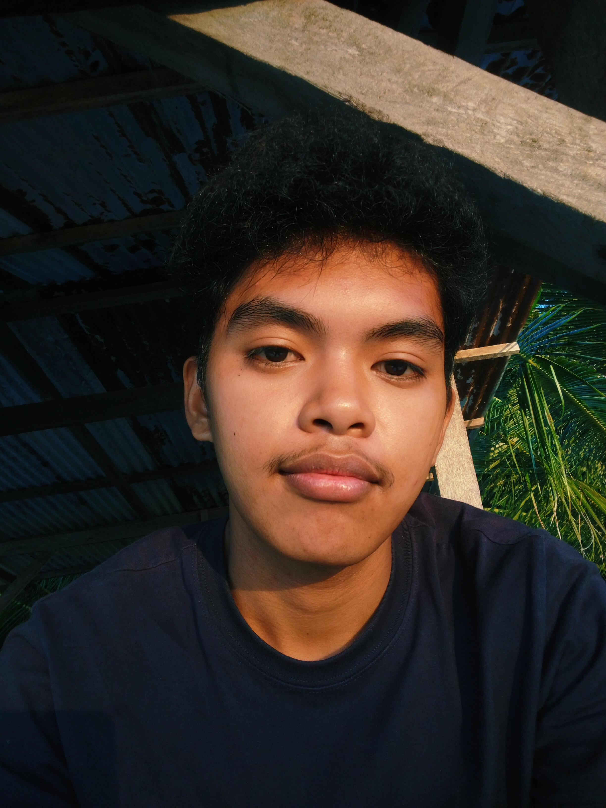

Vice President, UFY
United Foursquare Youth, Tiblawan Foursquare Gospel Church — led youth programs and served on the leadership team.
View→
01 — About Me
A Computer Science student passionate about transforming ideas into meaningful and functional applications that make a positive impact. My interest in technology comes from seeing how software can solve real-world problems, especially through systems that improve healthcare, education, and everyday life. To me, programming is more than writing code—it's about creating solutions that help people. Outside of tech, I enjoy traveling, exploring new activities, and spending time at the beach, where I find inspiration and balance.
My journey in technology has been both challenging and rewarding, with every project helping me grow as a developer and problem solver. I'm continuously improving my skills in Java, Python, JavaScript, HTML, and CSS while exploring new technologies and building practical, user-friendly applications. I enjoy working on projects that challenge me, encourage continuous learning, and have the potential to make a real difference. My goal is to build systems that simplify everyday life, inspire learning, and create meaningful experiences for others.
02 — Skills & Currently Learning
03 — Achievements & Experience
United Foursquare Youth, Tiblawan Foursquare Gospel Church — led youth programs and served on the leadership team.
View→Graduated Senior High School with Honors or academic perfomance and recognized for exemplary conduct and character.
Managed daily cash transactions, customer service, and financial accuracy in a fast-paced environment at Tiblawan Hardware.
Hands-on craftsmanship experience — built and crafted wooden objects.
Managed beach operations — oversees daily operations, safety rules, and cleanliness at Breezy Leaves Tiblawan Beach Resort.
04 — Academic Work
05 — Projects
The OUTAGE provides portable, energy-efficient cooling during power outages in underserved communities. The system combines solar panels, rechargeable batteries, and a water/ice reservoir to run an eco-friendly evaporative micro air pump.
View project →The SAKTO project automates waste segregation by detecting and sorting waste into wet, dry, or metal categories, providing a more efficient and hygienic alternative to manual sorting.
View project →The PAPER project addresses the problem of conventional paper being damaged easily and creates durable, water-resistant paper using recycled materials and a biodegradable taro leaf coating, reducing water damage and plastic waste.
View project →The Smart Landslide Observation and Prediction Engine (SLOPE) helps prevent landslide disasters by stabilizing soil and using sensors to monitor conditions and send real-time alerts to local authorities.
View project →Students with higher digital literacy tend to have better interaction and communication with their teachers.
View project →The study assesses students' acceptance of predictive chemical toxicity software and examines whether technological acceptability varies by demographic factors.
View project →The Lost and Found Management System replaces paper logs with a digital registry that tracks misplaced items through Java-based interface, real-time record management, and JSON data storage.
View project →A Java desktop application that streamlines movie ticket reservations by allowing users to browse showtimes, select seats, and manage their bookings through an intuitive interface.
View project →